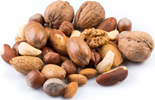

fruits à coqueLe terme "fruits à coque" désigne les amandes, noisettes, noix, noix de cajou, noix de macadamia, noix de pécan...
| Fruit à coque | Protéines | Fibres |
|---|---|---|
| Amande | Élevées | Élevées |
| Noix | Élevées | Élevées |
| Pistache | Élevées | Élevées |
| Noix de cajou | Élevées | Moyennes |
voisi quelques conseils pour intégrer les fruits à coquedans une alimentation équilibrée
| Moment | conseil | Illustration |
|---|---|---|
| Au quotidien | evitez les fruits à coque grillés ou salés | |
| préférez les naturels | ||
| pour varier | variez les fruits à coque, car leur profil lipidique et différent | |
| les amandes ,noisettes, noix,noix de cajou et pistaches sont riches en nutriments | ||
| au petit déjeuner | incorpez-en dans votre muesli ou porridge d'avoine au petit-déjeuner | |
| ils preuvent également etre à un yaourt ou à une salade de fruits | ||
| aprés l'effort | emportez-en avec vous pour le gout ou après l'effort |
les fruits à coque peuvent etre intégrés dans une alimentation équilibrée, en privilégiant les versions naturelles et non salées.

 vers le haut
vers le haut